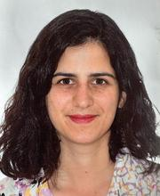

Carolina Cuesta-Lazaro
I am an Assistant Professor in the Department of Physics at New York University and an Associate Research Scientist at the Flatiron Institute. I develop robust machine learning models that can guide us towards future discoveries in physics. I am also passionate about science communication and making astrobabble understandable.
Reach me at cc9701@nyu.edu or ccuesta-lazaro@flatironinstitute.org to talk about science.